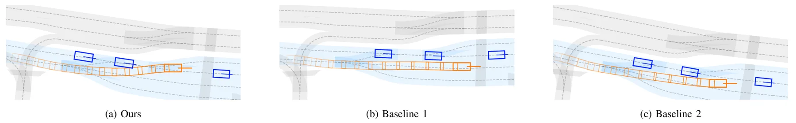
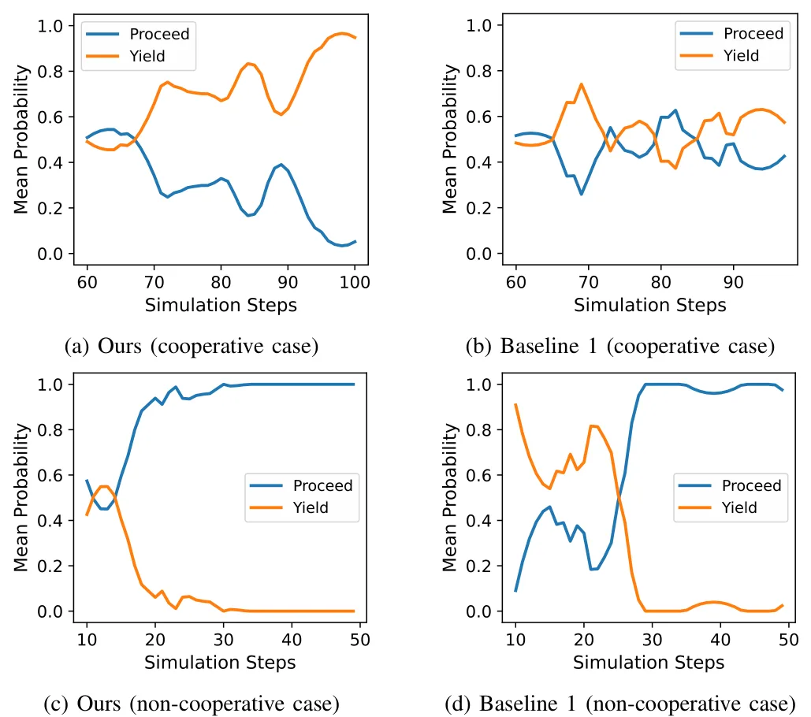
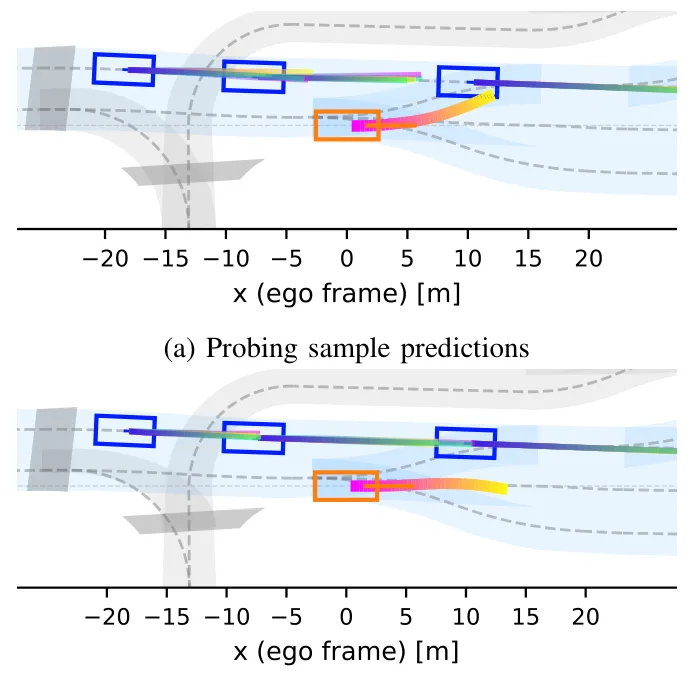
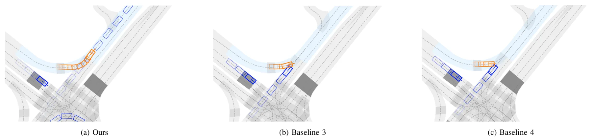
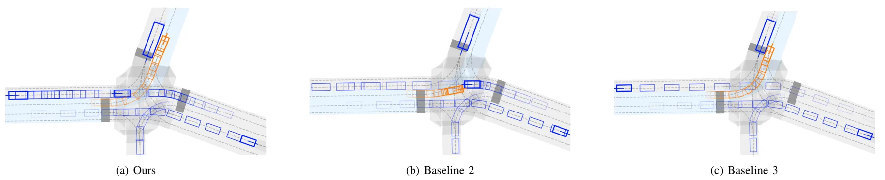
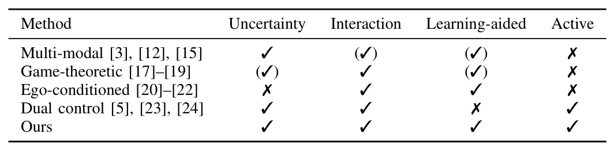
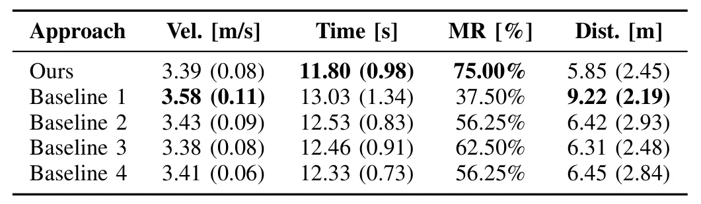
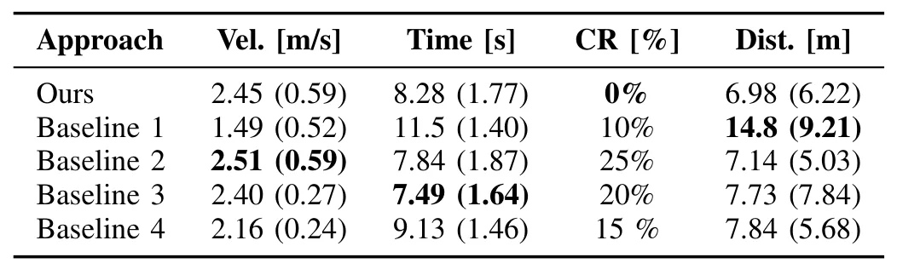
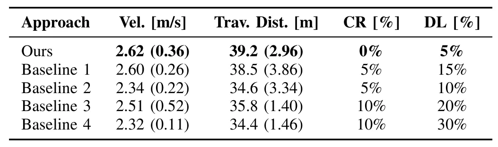

基于自我条件生成预测的主动交互感知 MPPIActive Interaction-Aware Model Predictive Path Integral via Ego-Conditioned Generative Predictions
重点是规划而非 SLAM/GNSS，但把自车动作对他车预测分布的影响纳入 MPPI，对自动驾驶闭环决策有方法参考。
一句话工作总结
面向密集交通的主动预测—规划闭环，适合跟踪多智能体交互、不确定性建模和采样式控制与定位感知系统的结合。
摘要
该框架把以自车未来动作条件化的生成式自回归预测模型接入 Model Predictive Path Integral 控制。预测模型针对每个候选动作输出周围交通参与者的随机多模态未来，嵌套采样用于估计期望代价和碰撞风险，使车辆能够主动评估不同动作如何改变交互结果，并选择降低不确定性的动作。
Dense traffic is inherently interactive. The ego vehicle and surrounding agents continuously influence each other's reactions, making "what-if" reasoning essential for safe and efficient driving. To enable such an active interaction-aware behavior, we propose a planning framework that integrates an ego-conditioned generative autoregressive prediction model within Model Predictive Path Integral (MPPI) control. The generative prediction model outputs stochastic, multi-modal predictions of surrounding agents conditioned on each of the ego's considered future actions. A nested sampling scheme enables tractable evaluation of expected cost and collision risk under the induced distribution. This formulation allows the ego to actively probe how different candidate actions shape the interaction outcomes and to identify actions that reduce ambiguity in uncertain interactions. Closed-loop simulations demonstrate improved safety and efficiency compared to conventional predict-then-plan and passive interaction-aware approaches.
中文解读摘录
- 中文名：RoboShape：面向隐私保护机器人感知的信息论点云表示
- 方向：点云表示、机器人感知、信息瓶颈、协同建图。
- 要点：在冻结 Sonata 编码器后加入信息论压缩头，同时保留目标理解信息并抑制敏感属性信息；报告嵌入体积缩小 87.5%、物体分类效用保留 98.7%，敏感属性预测下降 39.3%。
- 判断：对云端规划、协同建图和机器人感知数据传输有直接价值，但不是新的 SLAM 后端。
图表/页面预览

{kind=link}

{kind=link}

{kind=link}

{kind=link}

{kind=link}

{kind=link}

{kind=link}

{kind=link}

{kind=link}
